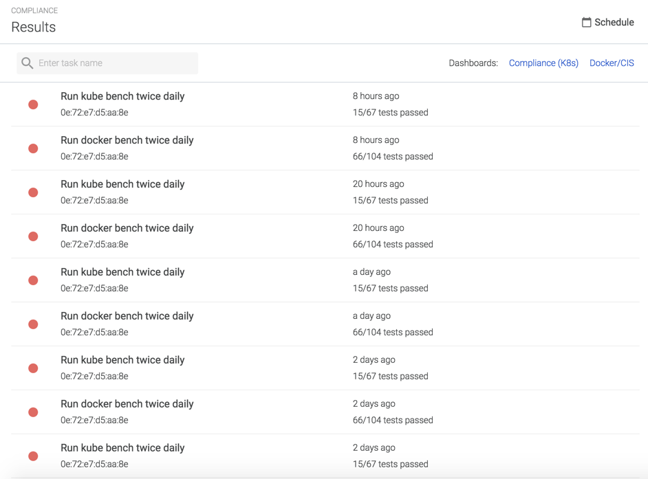
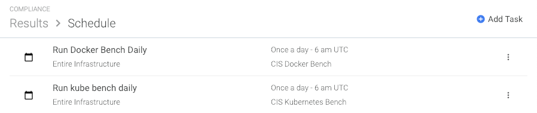
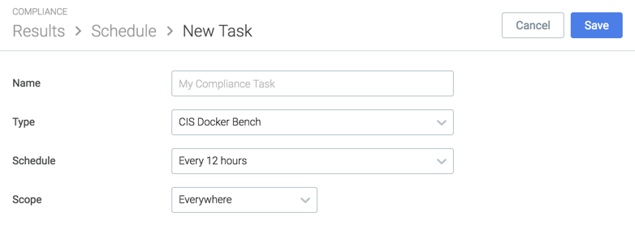
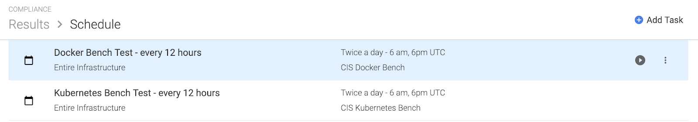
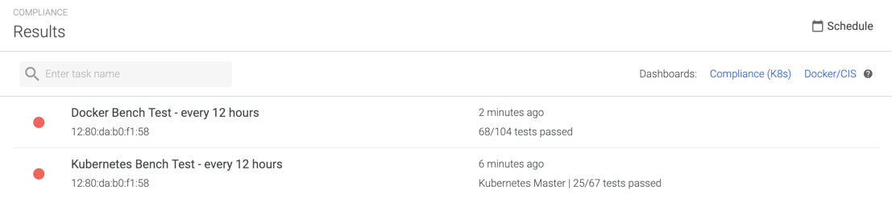
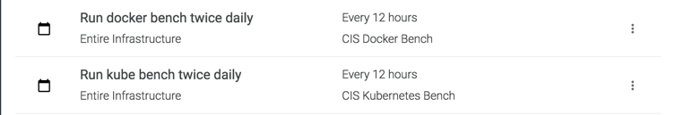
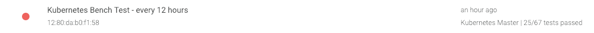
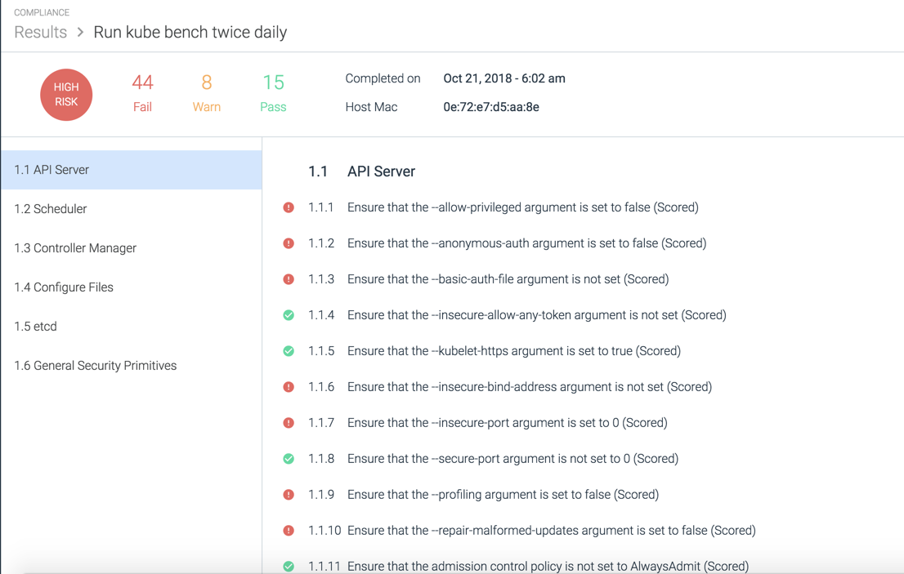
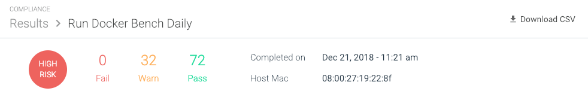

Compliance
The Compliance module allows users to run tests on Docker and Kubernetes environments against Center for Internet Security (CIS) standardized benchmarks to determine the state of the environment. CIS provides benchmarks, guidelines, and best practices for securing IT systems and data.
For more information regarding CIS benchmarks, refer to https://www.cisecurity.org/.
Contents
The Module
The Results Page
The Results page displays a live list of task results run within the environment. Each defined task is run on every node, and the results for each node is a separate line item on the Results page. Users can review individual task results, and navigate directly to the compliance dashboards configured in Sysdig Monitor by clicking the links in the top right corner of the page:
Note
For more information on configuring compliance dashboards, refer to the Dashboards and Metrics section.
|  |
The list displays the following information:
The name of the task
The host MAC address
How long ago the task was run
The number of tests that passed.
Note
For more information on task tests, refer to the Review Task Results section.
The Schedule Page
The Schedule page provides a list of the configured tasks in Sysdig Secure, and displays the scope, schedule, type of task they are, and when the task will next run. Users can add new tasks, as well as edit or delete existing tasks.
|  |
For detailed task configuration steps, refer to the Configure Tasks section below.
Configure Tasks
Schedule a Task
To schedule a new task:
From the
Compliancemodule, navigate to theSchedulepage.Click the
Add Tasklink: Configure the task name.
Set the type to
CIS Docker BenchorCIS Kubernetes Benchas needed.Define how often the task will run.
Define the scope.
Note
For more information about scopes, refer to the Grouping, Scoping, and Segmenting Metrics documentation.
Note
To reset the scope of a new or existing task to the full environment, open the first drop-down list and select
Everywhere.Click the
Savebutton.
Run a Benchmark Test Manually
Rather than wait for the next scheduled time for a compliance benchmark test to run, users can now choose to run a benchmark test manually:
From the
Compliancemodule, navigate to theScheduletab.Move the mouse cursor over the relevant benchmark test.
 Click the
Run Now(play) icon to run the benchmark test.
A notification pop-up will appear stating that the benchmark test was successfully run. Return to the Results tab, and refresh the tab after several minutes to see the results.
|  |
Edit an Existing Task
To update/change an existing task:
From the
Compliancemodule, navigate to theSchedulepage.Select the existing task from the list of configured tasks.
Edit the task as necessary and click the
Savebutton.
Delete a Task
To delete an existing task:
From the
Compliancemodule, navigate to theSchedulepage.Click the
More Options(three dots) icon for the relevant task: Select
Delete task.Click the
Yesbutton to confirm, or theNobutton to revert the change.
Review Task Results
Results from completed tasks can be reviewed from the Results page, by clicking on an individual task from the list. Opening a task displays the Test Results page for either Kubernetes or Docker (as appropriate), and provides a detailed report as to how the node performed against the benchmark tests.
The sections below provide screenshots of example benchmark results, and a link to the specific CIS benchmark results document download page. For more information about CIS practices, refer to https://www.cisecurity.org/.
Note
As shown in the Docker section below, some results have code blocks beneath them. These provide detailed information that users can copy and paste into support tickets should an issue arise, to assist the support team in finding the issue quickly.
Note
When a compliance test fails, an error log is displayed in place of the task results.
Search Test Results
The Results page can be searched/filtered using the search bar functionality at the top of the page:
 |
Identify the Kubernetes Master Node
The Kubernetes master node can be identified by the Kubernetes Master label applied to the results entry on the Results tab:
|  |
Kubernetes Benchmark Test Results
|  |
Note
For the complete CIS Kubernetes Benchmark documentation, refer to https://www.cisecurity.org/benchmark/kubernetes/.
Supported Kubernetes Versions
Sysdig supports Kubernetes compliance benchmark tests for the following Kubernetes distributions:
Kubernetes versions 1.6, 1.7, 1.8, 1.11
Note
Sysdig supports Kubernetes compliance benchmark tests for multiple versions of Kubernetes, as defined in the following CIS Benchmarks:
CIS Benchmark 1.0.0 (Kubernetes version 1.6)
CIS Benchmark 1.1.0 (Kubernetes version 1.7)
CIS Benchmark 1.2.0 (Kubernetes version 1.8)
CIS Benchmark 1.3.0 (Kubernetes version 1.11)
For versions between these supported milestones, the tests will fall back to earlier milestone versions.
Amazon Elastic Container Service for Kubernetes (Amazon EKS) default cluster version
Google Kubernetes Engine (GKE) default cluster version
IBM Kubernetes Service
Openshift versions 3.10, 3.11
Rancher
Docker Benchmark Test Results
 |
Note
For the complete CIS Docker Benchmark documentation, refer to https://www.cisecurity.org/benchmark/docker/.
Download Task Results
CIS compliance task results can be downloaded as a .CSV file:
From the Compliance module, navigate to the
Resultspage.Select the relevant task.
Click the Download CSV button:

Remediation Information
Sysdig provides remediation steps for each non-passing test in the benchmark, allowing users to identify the changes required to the environment to resolve the issues found.
To view the remediation information:
From the
Compliancemodule, click the relevant compliance benchmark test to open the results.Identify the desired test result by navigating to the results tab and scrolling to the test line.
Move the mouse cursor over the wrench icon beside the test result to open the remediation information text pop up.

The pop up information is a generic summary of what is usually required to resolve the issue. This information is not environment specific, and should be used as a guide, rather than specific configuration instructions.
Note
The remediation information is included when the report is downloaded as a .CSV file, allowing users to see all of the required configuration changes to remedy the found issues.
Dashboards and Metrics
Compliance Dashboards
Sysdig provides two pre-built compliance dashboards as part of Sysdig Monitor. These dashboards are called Compliance (K8s) and Compliance (Docker), and can be found by searching the list of pre-built dashboards for the word "Compliance", or by scrolling to the Compliance section of the list.
For information on building dashboards from scratch, or using the pre-built dashboards, refer to the Configure Dashboards documentation.
The example dashboard below is a Docker compliance dashboard:
 |
The example dashboard below is a Kubernetes compliance dashboard:
 |
Compliance Metrics
A number of compliance metrics for both Kubernetes and Docker are available to view in Sysdig Monitor dashboards. These metrics are documented in full in the Metrics Dictionary, and are available here: Compliance.